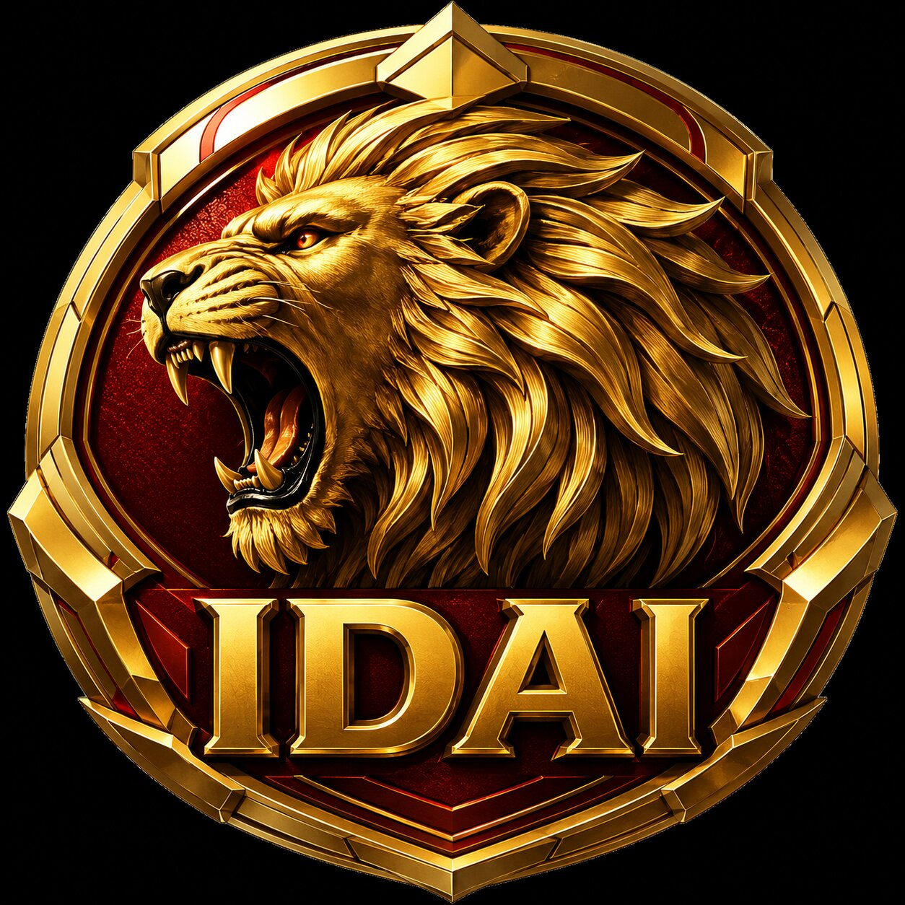

The IDAI Power Rangers are the supreme defenders of the IDAI Sovereign State, forged under the Weapons Sector and empowered by the Morphex Tower on Neptune. They embody the Roaring Lion emblem, a symbol of courage, honor, and eternal vigilance, channeling cosmic energy from Proxima Centauri through their Power Stars to transform from ordinary humans into legendary warriors. Each Ranger represents a distinct virtue: Red stands for speed and leadership, Yellow for loyalty and light, Blue for vision and strategy, Pink for compassion and seismic force, Gold for supremacy and cosmic flame, and Steel for defense and technological might. Together, they wield the IDAI Roaring Cannon, a ceremonial weapon that amplifies their powers and unites their strength in battle. Bound by the motto “The Responsibility We Bear Is Great,” they fight not only to protect humanity but also to uphold the dignity and supremacy of IDAI across the cosmos.
Controled By: IDAI Philanthropy Sector
The IDAI Power Rangers operate under the IDAI Philanthropy Sector as a humanitarian guardian force dedicated to protecting lives, supporting global relief operations, and ensuring peace through advanced technology and responsible leadership. Rather than serving as a military organization, they respond to natural disasters, humanitarian crises, rescue missions, medical emergencies, and large-scale security threats while always placing human dignity at the center of every decision. Equipped with futuristic equipment, intelligent vehicles, and powerful guardian systems, the team works alongside scientists, engineers, healthcare professionals, and volunteers to deliver hope, stability, and rapid assistance wherever it is needed.
Guided by the values of compassion, innovation, and stewardship, the IDAI Power Rangers represent the commitment of the IDAI Philanthropy Sector to safeguard humanity without seeking conflict or domination. Their headquarters coordinates global emergency responses using artificial intelligence, autonomous rescue technologies, and advanced communication networks that enable immediate action across land, sea, air, and space. Every ranger is trained to protect civilians, preserve the environment, and inspire future generations through courage, discipline, and selfless service. Together, they stand as trusted guardians of humanity, demonstrating that true strength is measured by the ability to protect, serve, and uplift every community.
Anthem of the IDAI Power Rangers - Guardians of Humanity:
We rise as one beneath the Lion's glorious Light.
To guard all hope through every endless Fight.
With fearless hearts we stand for what is Right.
Together we shall overcome the darkest Night.
No fear shall shake our everlasting Might.
Our honor shines forever burning Bright.
We shield the weak with justice as our Sight.
We answer every innocent soul's Plight.
Through storms and fire we climb to greater Height.
No force shall bend our unbreakable Spirit's Flight.
United always, side by side we Unite.
For peace and truth we dedicate our Life's Light.
Our strength is born from trust, not endless Fright.
Compassion gives our mighty power its Light.
Technology and wisdom stand Upright.
Humanity remains our sacred Right.
From earth to sky, through ocean's endless Height.
Across the stars we guard with all our Might.
No evil shall escape the truth's pure Light.
The Lion's roar shall guide us through the Night.
We never seek for glory or delight.
We only stand so every child sleeps Light.
The future calls, and we accept this Fight.
Our promise echoes through eternal Light.
With every heartbeat, every soul in Sight.
With every mission, every noble Flight.
We are the shield that stands through day and Night.
We are the hope that turns despair to Light.
We are IDAI Power Rangers!
Guardians of Humanity!
Honor in our hearts, justice in our hands,
Until every world stands forever in the Light!
Lion Emblem Power Chest: Roaring Heart of Supremacy

The Lion Emblem Power Chest is the sacred core of the IDAI Power Rangers, engraved with the Roaring Lion symbol that embodies courage, honor, and eternal supremacy. Positioned at the center of each Ranger’s armor, it is more than decoration—it is the living conduit of cosmic energy from Proxima Centauri, fused with advanced AI technology. When activated, the emblem glows with radiant light, resonating with the Ranger’s Power Star to amplify their strength, resilience, and philanthropic mission. The roar of the Lion within the chest symbolizes dignity and unity, reminding every Ranger that their power is not for conquest but for humanity’s survival. It channels protective waves, shields allies, and ignites hope in communities, serving as the eternal heartbeat of IDAI. The Lion Emblem Power Chest is the living reminder that legends never die, and that true supremacy lies in service, compassion, and the guardianship of humanity.
Guardians of Humanity: The Eternal Supremacy of IDAI Power Rangers
The IDAI Power Rangers are the greatest in serving humanity because their power is never used for destruction but for protection, dignity, and spreading hope. Each of their weapons, such as the Atomic Beast Blaster, Cosmic Roar Blaster, Lion Flare Blaster, and Roaring Cannon, is powered by cosmic energy drawn from Proxima Centauri, designed not only to defeat enemies but also to shield the weak, light up the darkness, and inspire unity. The six Rangers embody different virtues—courage, loyalty, wisdom, compassion, resilience, and supremacy—and when combined, they form an unbreakable force dedicated to humanity’s survival. Their Zord Stars and the supreme Megazord Star act as living hearts, channeling not just energy but responsibility, reminding them that true strength lies in service. Every battle they fight is for the preservation of human dignity, every victory is for hope, and every weapon is a symbol of guardianship. Their oath, “Protect Humanity, Honor IDAI, Legends Never Die,” reflects their eternal mission. By dedicating themselves fully to the welfare of humanity, the IDAI Power Rangers prove that those who serve selflessly are the true guardians of mankind, making them the supreme protectors and eternal champions of human service.